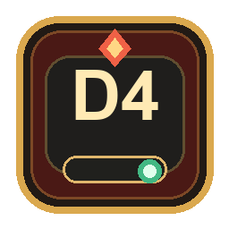
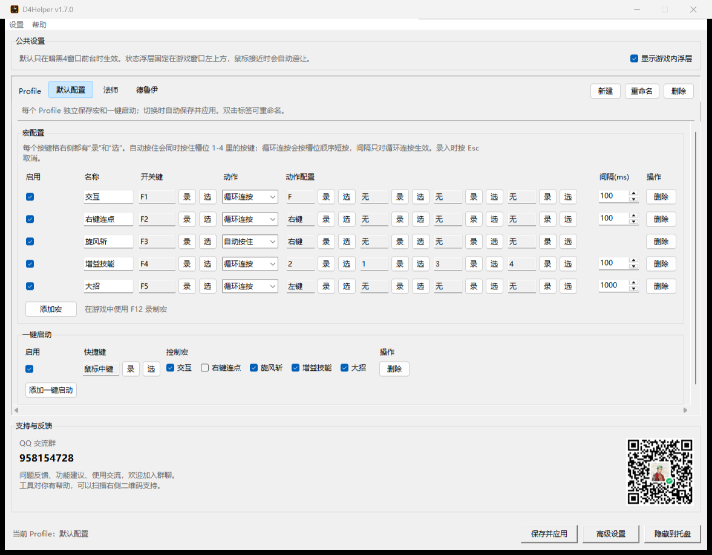
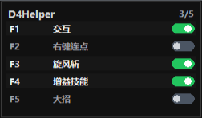

自动按住
不用一直按着鼠标或键盘。设置目标按键，按一次快捷键持续按住，再按一次释放。

D4HelperD4Helper / 暗黑破坏神 IV / Windows
一个轻量的暗黑 4 宏助手。自动长按、循环连按、录制回放，按一次快捷键就能开关；不同角色的配置，也能单独保存。
v1.7.0 · 解压即用 · 国内加速下载 GitHub 官方下载 ↗
仅在匹配的游戏窗口前台生效，切出游戏自动停止并释放按键。
点击上方角色切换示例。实际宏与快捷键可自行配置。
快速上手
不必先研究所有设置，跑通第一个宏后，再按自己的习惯调整。
下载 Windows 压缩包，解压到一个文件夹。无需安装，保留包内文件在一起即可。
前往下载
打开
D4Helper.exe，先保留“默认配置”，点击“保存并应用”。默认已匹配暗黑 4。
进入暗黑 4，按 F1 试用交互连按；再按一次关闭。游戏左上方浮层会显示宏状态。
按一次开启，再按一次关闭。切出游戏会自动停止，切回后需重新按键开启。
功能介绍
从简单长按到一组技能，按自己的玩法搭配。
不用一直按着鼠标或键盘。设置目标按键，按一次快捷键持续按住，再按一次释放。
按顺序循环触发最多 4 个按键，间隔可调。交互、技能连按，从默认 100ms 开始试用。
游戏内按 F12 录下按键和鼠标点击，再按一次结束。配置后可执行一次或循环回放。
勾选要控制的宏，用一个快捷键成组开启或关闭，无需挨个操作。
为不同角色或玩法新建 Profile，分别保存宏和一键启动。点击标签切换，当前编辑自动保存。
开关键、宏名称和运行状态一眼可见。浮层支持鼠标穿透和接近避让，程序可隐藏到托盘。
软件界面
在配置页调整宏和快捷键，回到游戏通过浮层确认开关状态。


免费使用 · 源码公开
D4Helper 由 Kevin Loo 维护，所有功能免费使用。项目采用 GNU GPL v3.0，欢迎查看源码、修改和参与改进。
再发布修改版时，请保留版权与许可声明、标明修改，并按 GPL-3.0 提供对应源码。允许改名和商业分发，不能将受许可约束的衍生代码改为闭源发布。
了解版权与历史版本许可Windows · 最新稳定版 v1.7.0
所有功能免费，无需安装。下载包内含程序、默认配置和版本文件。
国内加速由第三方 GitHub 代理提供；访问失败时，请使用 GitHub 官方下载。已发布的 v1.7.0 仍沿用 MIT 许可，当前源码许可见开源说明。
常见问题
先确认暗黑 4 窗口位于前台，目标宏已勾选启用，并点击过“保存并应用”。默认快捷键只适用于初始配置，已有配置以自己的设置为准。
仍无反应时，检查“高级设置 → 窗口匹配”。如果游戏以管理员权限运行，D4Helper 也需要相同权限。
先退出旧程序，备份并保留原来的
config.json，不要用下载包内的默认配置覆盖它，再替换程序及其他发布文件。旧版宏会保留在“默认配置”中。
不会。切出游戏或切换 Profile 都会停止宏并释放按键。切回游戏后，使用快捷键重新开启，避免意外恢复操作。
使用官方程序无需付费，打赏完全自愿。个人修改自用无需公开源码；对外分发程序或修改版时，需按 GPL-3.0 保留版权与许可、标明修改并提供对应源码。
GPL 允许改名和收费分发，不代表可以抹掉原作者版权或冒充官方。此前已按 MIT 发布的版本继续适用原 MIT 授权，当前源码的许可详见仓库中的 LICENSE 与 NOTICE。